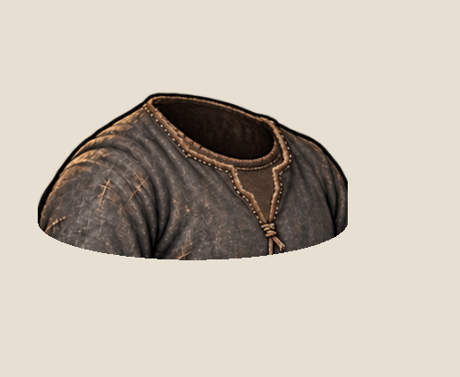
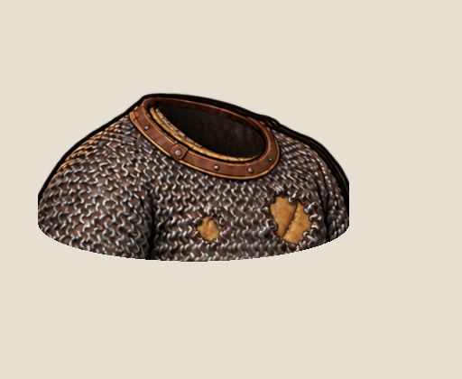
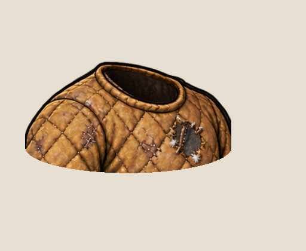
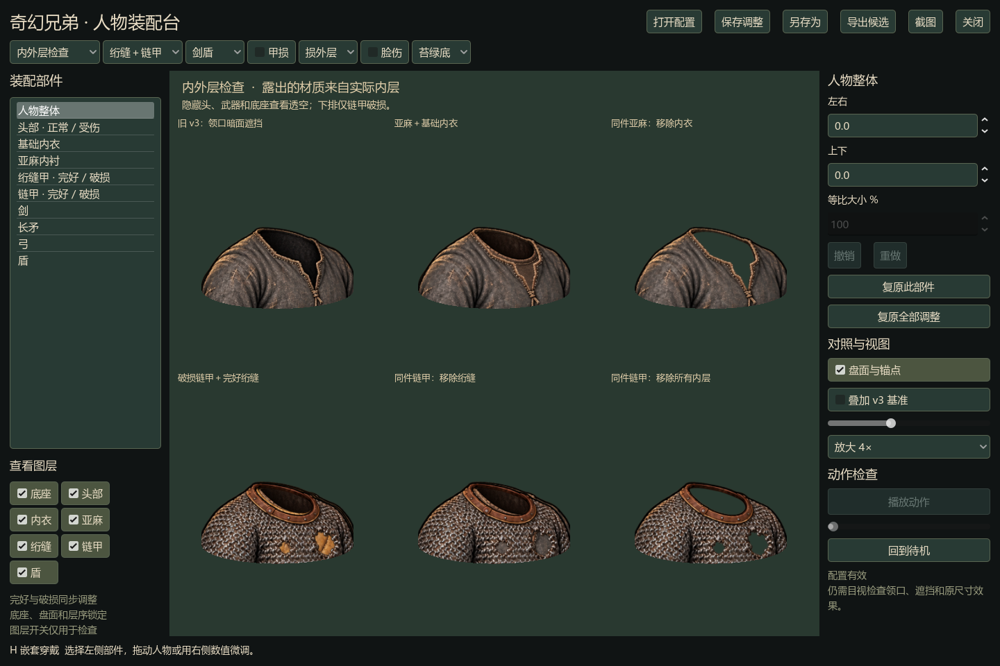
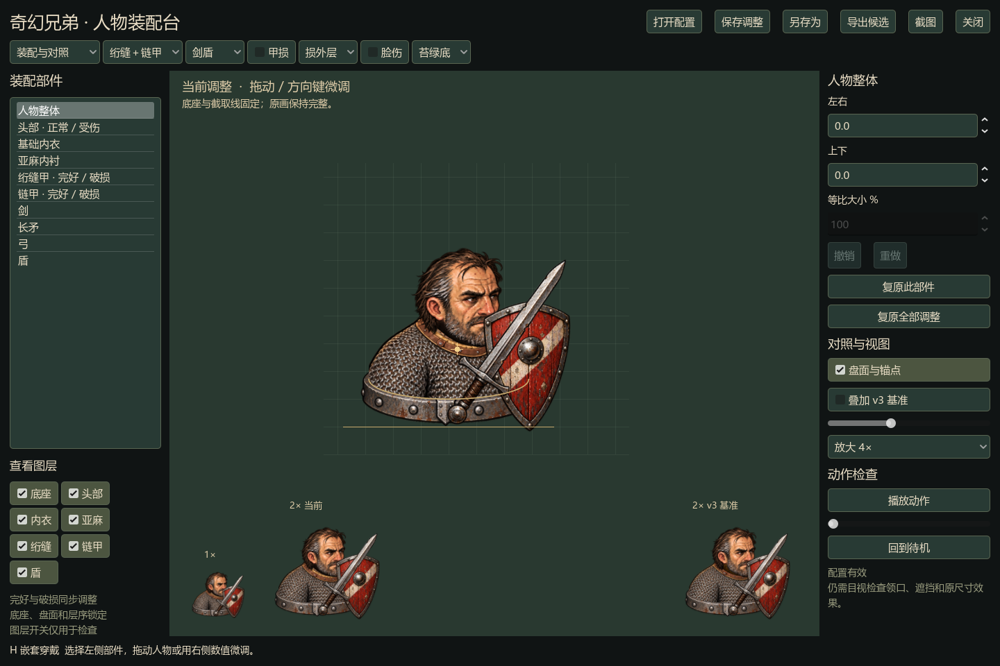

同一件外衣保持不动，切换里面的衣物，领口和破口里的材质随之改变。下面每一帧都来自实际 Windows 程序；隐藏头部和底座，方便看清开口。

V 领里露出棕色基础内衣，内衣的圆领也保留自己的轮廓。

仅链甲损坏，露出实际穿着的金色绗缝甲；绗缝甲仍然完好。

撕裂中心露出灰色亚麻，边缘保留属于绗缝甲自己的布头和少量填充物。
在 Paperdoll.cmd 中选择“内外层检查”，或在装配视图开关内衣／亚麻／绗缝层。勾选“甲损”后，还可选择“损外层／损衬甲／全损”。

